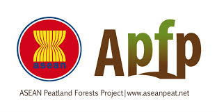

.
Kerjasama internasional adalah kerja sama antara negara yang dilakukan untuk mencapai tujuan yang saling menguntungkan. Indonesia memiliki peran yang penting dalam berbagai forum internasional, bekerja sama dengan banyak negara untuk mempercepat pencapaian SDG. Kerjasama internasional ini sangat penting, terutama untuk mengatasi berbagai tantangan global, seperti perubahan iklim, kesehatan global, dan ketimpangan ekonomi. Indonesia terlibat dalam berbagai jenis kerjasama, termasuk kerjasama bilateral (dua negara) dan multilateral (lebih dari dua negara), serta dengan organisasi internasional.

SDG 13 – Mengatasi Perubahan Iklim Mengapa Tujuan Ini Penting untuk Indonesia. Indonesia adalah salah satu negara yang paling terpengaruh oleh perubahan iklim. Negara kita sering menghadapi bencana alam, seperti banjir, kekeringan, dan kebakaran hutan. Karena itu, Indonesia perlu berperan aktif dalam mengatasi masalah ini, baik di tingkat domestik maupun global.
.
Jenis Kerjasama yang Dilakukan Indonesia:
.
Kerjasama Bilateral: Indonesia bekerja sama dengan negara-negara seperti Jepang dan Australia untuk program pengurangan emisi karbon dan pengelolaan hutan.
Kerjasama Multilateral: Indonesia juga terlibat dalam pertemuan internasional seperti COP (Conference of the Parties) yang membahas kebijakan global terkait perubahan iklim.
Kerjasama dengan Lembaga Internasional: Indonesia bekerja dengan PBB dan lembaga keuangan internasional seperti Bank Dunia untuk mendanai proyek-proyek yang mendukung keberlanjutan lingkungan.
.
Contoh Proyek Nyata:
.
Indonesia dan Paris Agreement: Indonesia berkomitmen untuk mengurangi emisi karbon dan mendukung Paris Agreement, yang bertujuan membatasi pemanasan global hingga di bawah 1,5°C.
Pengelolaan Hutan Tropis: Indonesia bekerja sama dengan negara-negara tetangga dalam program ASEAN Peatland Forests Project untuk menghindari kebakaran hutan yang dapat merusak ekosistem dan menghasilkan emisi karbon.
Jenis Kerjasama Internasional yang Dijalankan Indonesia Indonesia terlibat dalam berbagai bentuk kerjasama internasional, antara lain:
Kerjasama Bilateral: Kerjasama antara dua negara untuk menyelesaikan masalah yang saling menguntungkan. Contohnya, Indonesia bekerja sama dengan Jepang dalam mengembangkan energi terbarukan dan dengan Australia dalam pengelolaan perubahan iklim.
Kerjasama Multilateral: Kerjasama antara lebih dari dua negara, seperti yang dilakukan Indonesia dalam forum ASEAN, COP, dan organisasi internasional lainnya.
Kerjasama dengan Lembaga Internasional: Indonesia juga bekerja dengan organisasi internasional seperti PBB, Bank Dunia, dan Asian Development Bank untuk mendanai proyek-proyek yang mendukung tujuan SDGs
.
